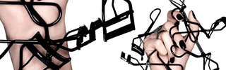
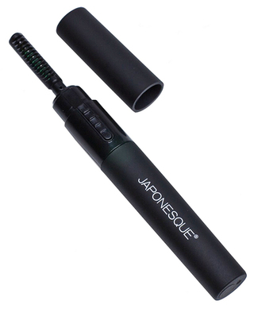
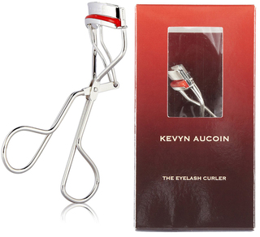

¡Hola a todas! Llevo un tiempo queriendo hacer una entrada sobre este tema. Creo que en general hay mucha desinformación. Acerca de cada cuánto hay que cambiarlo, si realmente es perjudicial o no para las pestañas, qué marcas son mejores, qué hay que tener en cuenta a la hora de elegirlo (porque no todos valen), [...]

¡Hola a todas! Llevo un tiempo queriendo hacer una entrada sobre este tema. Creo que en general hay mucha desinformación. Acerca de cada cuánto hay que cambiarlo, si realmente es perjudicial o no para las pestañas, qué marcas son mejores, qué hay que tener en cuenta a la hora de elegirlo (porque no todos valen), y sobre todo cómo usarlo correctamente.
Rizar las pestañas es un paso que no hay por qué hacer cada vez que nos maquillemos, pero que cuando lo hacemos, cambia totalmente la mirada, se ve mucho más abierta y expresiva, y también es de ayuda para las personas que las tienen muy rectas o lacias, y que no consiguen elevarlas con ninguna máscara.
Quisiera empezar por resolver algunas dudas que leo a menudo respecto al uso de los rizadores, siempre desde mi experiencia, por supuesto.
En primer lugar ¿es realmente necesario rizar las pestañas? Bien, necesario no es, pero sí marca una diferencia en el efecto de nuestra mirada. A veces, el hecho de simplemente rizarlas, sin aplicar máscara después, es suficiente para conseguir una mirada mucho más amplia, expresiva y despierta, y sobre todo, hace que las pestañas se vean el doble de largas.
¿Es malo para las pestañas el uso de rizadores? No. Sé que mucha gente piensa que sí y que es algo que está muy extendido, pero realmente no hay todavía ningún estudio que lo afirme. El usar rizador no estropea las pestañas, ni las parte, ni hace que se caigan. Pero lo que SÍ es súper importante es usar un rizador de calidad, con una goma que no presione en exceso y sobre todo, usarlo correctamente. Para mi la prueba evidente es que llevo usando rizadores desde que empecé a maquillarme de más jóven y nunca jamás se me han partido, ni caído ni nada parecido.
¿Cómo usar correctamente el rizador de pestañas?
- Ante todo, es importante encontrar un rizador de calidad. ¿Y cómo sabemos si lo es? Bien, en primer lugar, lo más importante es la calidad de la goma. Un buen rizador tendrá una goma de un grosor determinado, su calidad hará que no se desgaste tan rápido como otras, y también determina la presión que se ejerce sobre las pestañas cuando usamos el rizador.
- La presión del rizador también es muy importante. Hay algunos que no están bien amortiguados y crean más presión que los que sí lo están, ejerciendo una presión mucho más brusca, “doblando” las pestañas en vez de curvarlas.
- Para rizarlas bien, hay que mirar de frente al espejo, elevar ligeramente la barbilla para que miremos ligeramente hacia abajo y el párpado se estire. Con esto evitamos “pillar” la piel del párpado.
- El rizador ha de colocarse en la raíz de las pestañas ejerciendo una primera presión durante un par de segundos, después, subimos unos milímetros, para rizarlas en el centro y que adquieran una forma de C, y no de L.
- La presión ha de ser súper suave y delicada. Lo que ocurre con un rizador de mala calidad es que nos obliga a hacer mucha presión para conseguir rizarlas. Un buen rizador las rizará sin necesidad de apenas presionar, cuidando las pestañas y sin dañarlas en absoluto.
- Es mucho más perjudicial cómo frotan y restriegan algunas personas las pestañas al desmaquillarlas, que rizarlas con un buen rizador.
LO QUE NO DEBES HACER:
-
Utilizar calor: Existe la práctica de calentar el rizador con un secador de pelo para intensificar el efecto del rizador. Si tu rizador es bueno, NO necesitas aplicar calor para que queden mejor. El calor del secador, obviamente, en un pelo tan delicado como es el de las pestañas, es malísimo.
-
Rizar las pestañas después de aplicar la máscara: Esto es malísimo y mucha gente lo hace. Una vez la máscara está seca, la pestaña está rígida y ahí sí que podemos partirla si ejercemos presión sobre ella.
MANTENIMIENTO:
Esto es súper importante y muchas veces me he encontrado con gente sorprendida al saber que un rizador hay que cambiarlo cada X tiempo y que no basta con cambiar la goma.
- Los rizadores tienen un ciclo de vida de un año y medio más o menos. Es por eso que siempre vienen dos recambios de gomas y no se venden por separado: cada una dura aproximadamente 6/8/10 meses dependiendo la frecuencia de uso.
- Llega un punto que la goma se desgasta, que el mango del rizador pierde presión y esto hace que, como he dicho antes, la presión sobre la pestaña se vuelva brusca y las dañe.
- Hay que limpiar la goma siempre después de cada uso. Los restos de maquillaje pueden estropearla antes de tiempo.
- Cuando notes que el mango de tu rizador está muy suelto, que la goma tiene grietas (esto puede pellizcar las pestañas) o está muy blanda: tíralo.
TIPOS DE RIZADORES:
Existen dos tipos de rizadores en el mercado, los convencionales, con forma de tijera o pinza, metálicos y con una goma curvada, y los rizadores con calor. Como maquilladora, siempre tengo uno en el maletín porque hay veces, sobre todo la gente mayor, o personas con la pestaña muy corta, que es muy difícil pillar bien el pelo. En este caso son de gran utilidad porque es más fácil llegar a la base de la pestaña y además no ocupa espacio en el párpado. Para casos puntuales está bien tenerlo, pero para uso frecuente yo no usaría calor en las pestañas. Además, se tarda mucho más tiempo (el rizador tiene que calentarse, tienes que pasarlo por la raíz muy lentamente, etc) y además está pensando para usar después de la máscara, de lo que no soy nada partidaria, pero a veces (siempre puntualmente) si no queda más remedio, te saca del apuro. El que yo tengo es de Sephora.
Rizador con calor de Japonesque:

CÓMO ELEGIR EL RIZADOR ADECUADO PARA TI
Indudablemente todas habréis oído maravillas del rizador de Shu Uemura. Es uno de los más famosos, y aunque es buenísimo y es uno de mis favoritos, lo cierto es que no es adecuado para todo el mundo (ni éste ni ninguno). Cuando vayas a comprar un rizador, debes fijarte en su tamaño y en su arco, para que se adapte bien a la forma y tamaño de tus ojos.
Si tienes el ojo almendrado, hundido o pequeño, el rizador con la forma similar al de MAC, por ejemplo, te irá mejor que el de Shu Uemura, el cual es perfecto para las asiáticas porque tienen una cuenca mucho menos profunda y el párpado más plano, por eso este rizador tiene un arco menos pronunciado. En nuestro caso, si tu ojo es grande y no muy ovalado, te irá mejor el de Shu que otro más curvado.
FAVORITO
Kevyn Aucoin: The Eyelash Curler
£ 18 (21€ aprox)
Donde comprar: Mise Beauty

Este es sin duda el MEJOR rizador de pestañas que he probado. Os lo digo porque he probado muchos: Chanel, Shu Uemura, Japonesque, MAC (este es uno de los que más me gustan para uso general también), Tweezerman… no sólo para mi si no también en clientes. No me extraña que tenga el premio de la revista Allure como mejor producto de belleza durante los años 2002, 2003, 2004, 2005 y 2011.
El secreto en primer lugar es la goma. Es súper suave y gruesa, y está hecha de una resina especial de larga duración y que es súper delicada con las pestañas. La forma del mango y la amortiguación que tiene, hacen que con una presión súper leve, curves las pestañas totalmente, sin necesidad de insistir. La curvatura aguanta mucho, y gracias al arco y a la goma, se curvan muy bien desde la raíz, quedando súper elevadas y no dobladas, en forma de L como hacen algunos rizadores.
Si eres maquillador, lo necesitas. Es increíble lo bien rápido que se rizan las pestañas, y su forma hace que resulte muy fácil cuando se usa desde otro ángulo (es decir, para hacérselo a otra persona).
Sé que habrá gente que piense que no le conviene comprar un rizador todos los años (si no se usa frecuentemente, dura muchísimo más), pero la verdad es que 20€ en un año por la salud de mis pestañas, a mi no me molesta gastarlo (y obviamente porque lo necesito para trabajar).
Los ejemplos que yo he puesto hacen referencia a los rizadores que yo he usado, pero por supuesto también habrán rizadores económicos y que funcionen bien, pero hay que fijarse en lo que os he expuesto más arriba.
TRUCO: Para que la curvatura del rizador dure todo el día y no caiga, es súper efectivo utilizar máscara waterproof.
Espero que os haya sido de ayuda esta entrada, y que miréis el rizador con un poco menos de miedo :P Que, aunque a simple vista parezca un instrumento de tortura medieval, es muy efectivo y transforma la mirada.